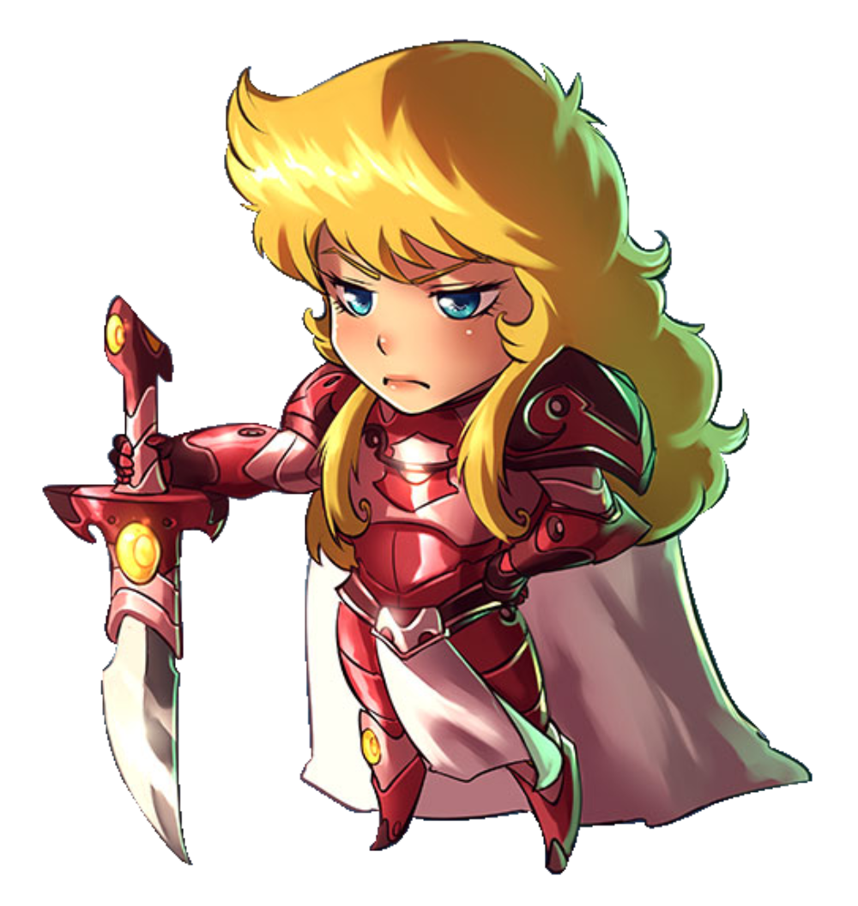
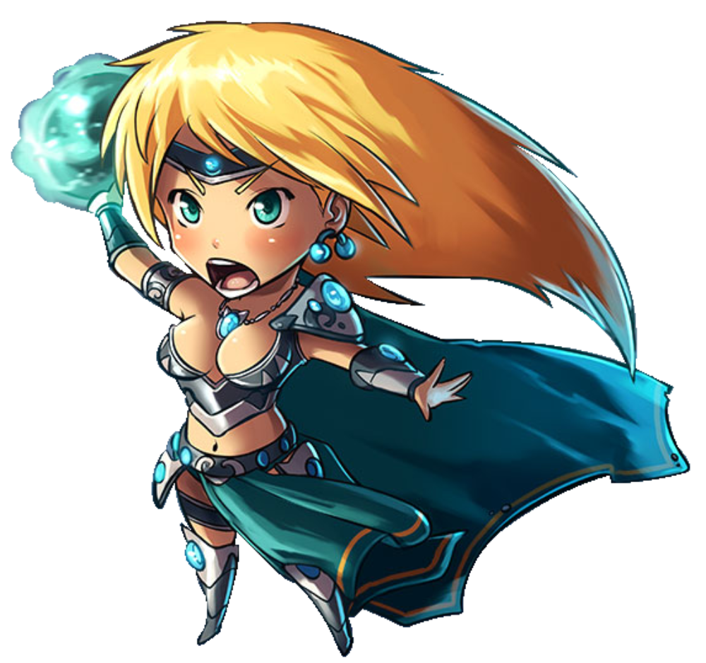
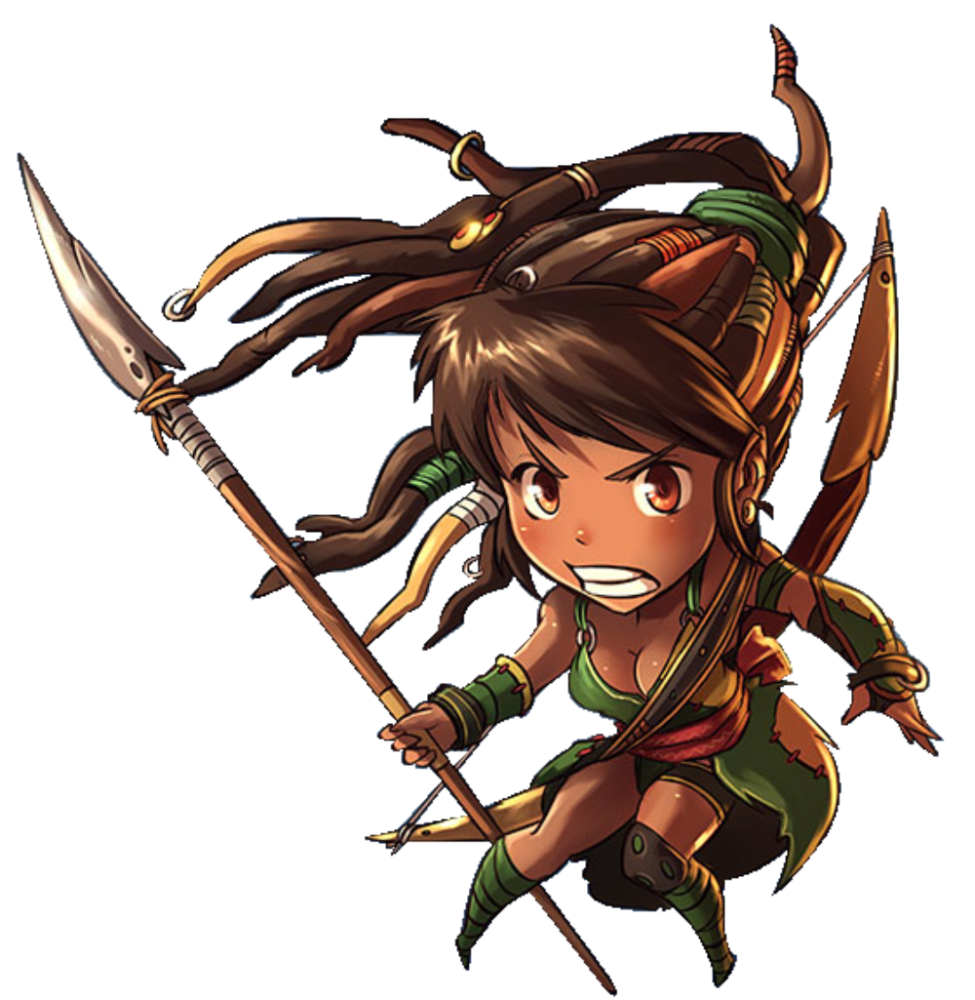

Bem Vindo ao Lost Souls Kingdom
A muito tempo atrás etc.. fim
-
Cloe
Cloe cresceu em uma tacanha aldeia de produção frutífera e leguminosa, possuindo visões que as divindades lhe concediam. No vislumbre que teve sobre o seu futuro, observou-se coberta de esqualidez e contornada de criaturas em seus derradeiros instantes de existência. O recado não consegueria ser mais translúcido: " Não percorra a trilha de um combatente!", mas Cloe constantemente obstinada, possuía grande aptidão para o embate e uma natureza insubmissa.
Ela tinha o coração de um guerrilheiro.
Cloe percebeu que possivelmente as Deusas estivessem tentando previní-la de uma provável ruína por sujeira. Ela podia vislumbrar-se revestida de uma resplandecente armadura da Guardalunar, rente aos corpos dos adversários derrotados e seus cabelos perfeitos volitando com a brisa. Sem dúvida essa era a vontade dos seres divinos.
Ela viajou para o reino maior com a intenção de ingressar na academia de guerreiros, sem jamais olhar pra trás. Neste instante, Cloe que é uma absoluta paladina, passa horas polindo suas armas e armadura, já que não se pode confiar em escudeiros preguiçosos.
Frase de Cloe: " Se eu sempre fizesse o que mandam, eu ainda seria uma camponesa. "
-
Luna
Desde muito pequena, Luna já demonstrava grande aptidão nas artes telecinéticas.
Certa vez, sua aldeia nas montanhas sofreu com a erupção de um vulcão, que deixou quase tudo revestido de lava. A pequena Luna assustada, instintivamente formou uma barreira com madeiras e, quando necessário, desviava o fluxo de lava para que os aldeões pudessem escapar da grande ira do vulcão Mamoto.
A medida que Luna foi evoluindo, ficou notório que a nascente de seu poder incredível eram instantes de explosões emocionais. Desse modo, por alguns instantes Luna obtinha acesso a um poder assustador e alcançava feitos nunca vistos por alguém de sua idade. Na adolescencia, em uma aventura de sorte conheceu seu mentor. Estudioso, detentor de um poder desumano, Tonium direcionou e desenvolveu os poderes e intelecto de Luna enquanto percorriam terras desconhecidas em busca de pergaminum's que obtivessem teorias básicas de difusão arcana.
Ao retornar a seu lar, e se deparar com sua terra de nascença invadida por troll's, Luna não carece de muito empenho para acessar a ira que impulsiona seus poderes.
Frase de Luna: "O segredo do meu poder? IOGA. E raiva. Mais raiva do que ioga. Na verdade, só a raiva mesmo."
-
Nick
O clã de Nick, uma das atípicas Elfas ruivas que residem ao norte da floresta da Meia Noite, alega desde o exórdio que sua linhagem compartilha parentesco com os Troll's avermelhados. Isso tem coerência, pois de onde viriam a cor de seus cabelos? Os elfos ruivos tem um Gênio petardo e Nick não se exclui disso. No tempo em que outros elfos se satisfazem em dançar e cantar, Nick prefere passar o dia rapinando, com o auxílio de seu leal companheiro Arpia.
Nick pilhou muitas masmorras em sua infância e agora ela volta sua atenção para "Nome do jogo". Em combate, os associados de Nick mostram com rapidez como manter o foco dela direcionado sem desvios aos adversários.
Frase de Nick: "Esses Trolls não sabem lutar de Verdade."